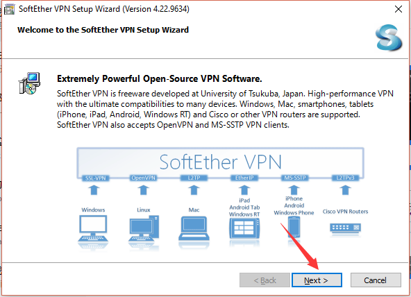
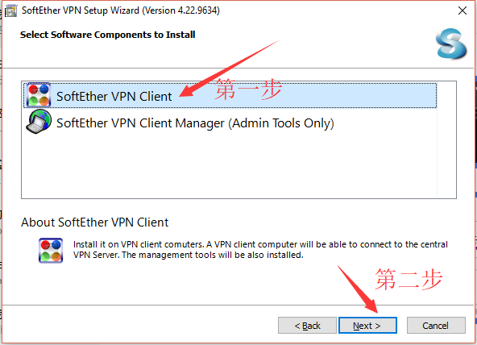
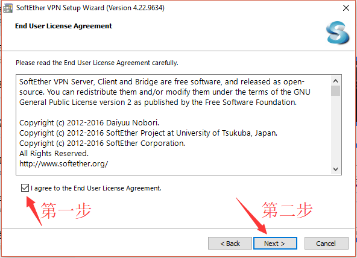
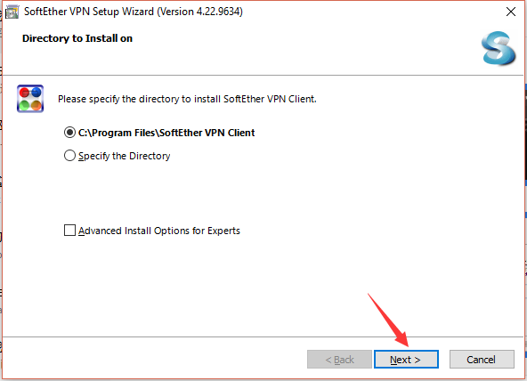
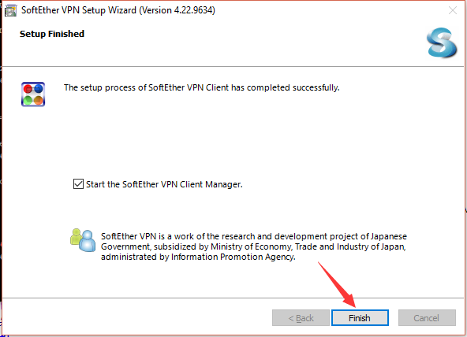
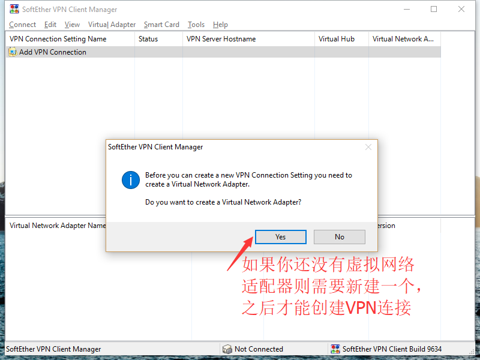
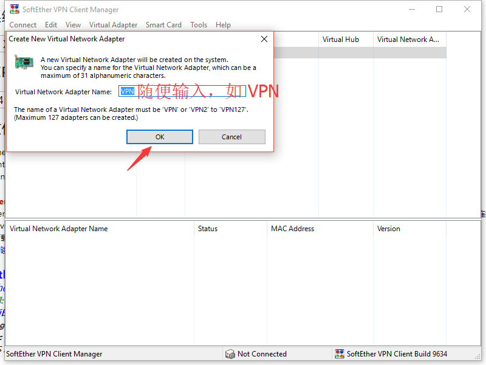
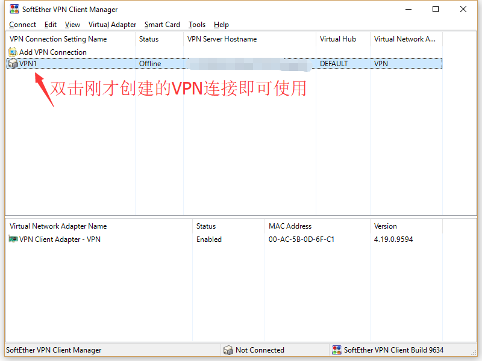
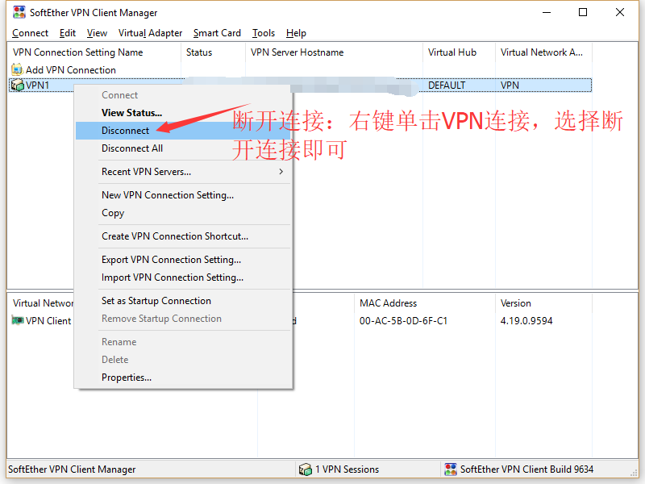
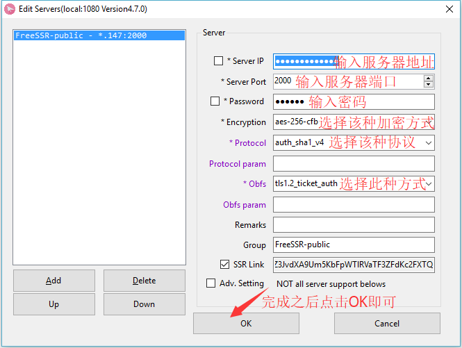

PS：如不想下载客户端可以使用Windows系统自带的VPN设置方式，详情请参考Windows7 VPN设置和Windows10 VPN设置。
PS：如果选择的是ShadowsocksR代理账号请直接看教程的最后，如果购买的是VPN账号请不用理会。
首先请点此下载Windows VPN客户端
第一步：
第二步：
第三步：
第四步：
第五步：
第六步：

第七步：
第八步：
第九步：

第十步：

第十一步：
第十二步：
Windows ShadowsocksR代理 客户端设置
首先请点击此处下载Windows ShadowsocksR 客户端。下载完成后解压，Windows8以下的操作系统建议使用 ShadowsocksR-dotnet2.0.exe ，Windows8及以上的操作系统建议使用 ShadowsocksR-dotnet4.0.exe
第一步：双击客户端程序后，在右下角的任务栏里寻找飞机图标的客户端程序，然后右键-服务器(Servers)-编辑服务器(Edit servers)。
第二步：
